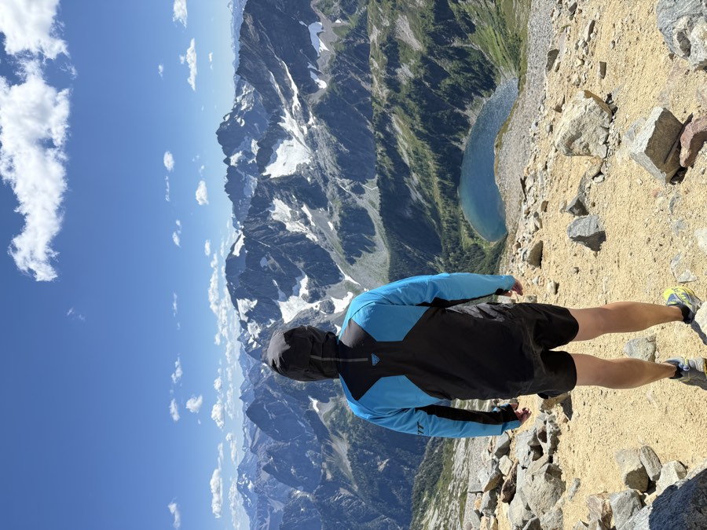

Hike
Cascade Pass to Sahale Camp
This 12-mile round trip climbs 4,000 feet from Cascade Pass to Sahale Glacier Camp. The route winds through wildflower meadows and over rocky ridges, with amazing views of jagged peaks and turquoise alpine lakes along the way.
Read more